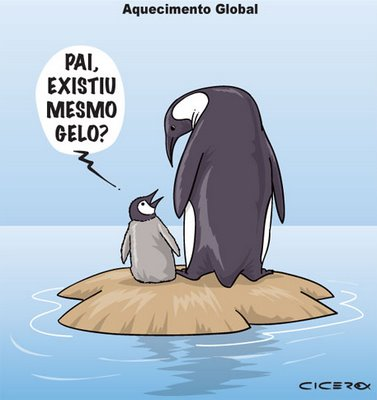
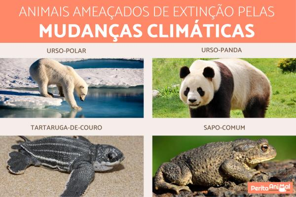

Efeitos do Aquecimento Global
Os efeitos do aquecimento global são abrangentes e impactam diversos aspectos do meio ambiente e da sociedade.Os principais efeitos incluem:
- Aumento das Temperaturas:A temperatura média global está aumentando, o que pode levar a ondas de calor mais frequentes e intensas.
- Derretimento das Calotas Polares e Glaciares: O aquecimento global está causando o derretimento acelerado de gelo nas calotas polares e glaciares, contribuindo para a elevação do nível do mar.
- Elevação do Nível do Mar: O aumento do nível do mar ameaça áreas costeiras com inundações e erosão, podendo resultar na perda de habitats e na deslocação de comunidades costeiras.
- Mudanças nos Padrões Climáticos: Alterações nos padrões de precipitação e aumento da frequência de eventos climáticos extremos, como secas, tempestades e enchentes, afetam a agricultura, a infraestrutura e a segurança das comunidades.
- Acidificação dos Oceanos:O aumento da concentração de CO2 na atmosfera também resulta em maior absorção de CO2 pelos oceanos, tornando-os mais ácidos e prejudicando a vida marinha, como corais e moluscos.
- Impactos na Biodiversidade:Mudanças nos habitats e no clima podem ameaçar a sobrevivência de diversas espécies, levando à perda de biodiversidade e a alterações nos ecossistemas.
- Saúde Humana:O aquecimento global pode impactar a saúde humana, aumentando a incidência de doenças relacionadas ao calor, respiratórias e transmitidas por vetores, como malária e dengue.

